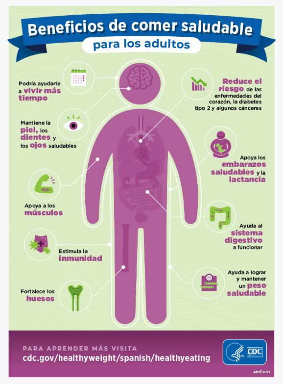

Beneficios de comer sano...
- Proteges a tu cuerpo de la desnutrición. - Previenes el desarrollo de enfermedades no transmisibles. - Reduces los factores de riesgo para tu salud. - Previenes el sobrepeso y la obesidad.
